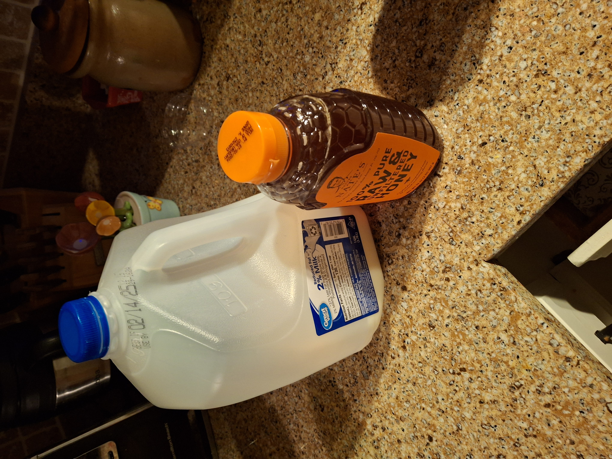

Ingredients:
* Honey
* Milk

Utincels:
* Mug
* Spoon

Step 1: Pour milk into the mug (about 1 cup, but I usually fill to ~75%).

Step 2: Heat up milk, I did microwave. (Tried for 45 seconds, needs longer).

Step 3: Pour honey on spoon (I did 1 spoon full, but would recommend 2).

Step 4: Mix honey. Should come out as a slightly sweet milk, but healthier.
I did not achieve this in this batch, so modify it to your wish. I will return later for better notes.